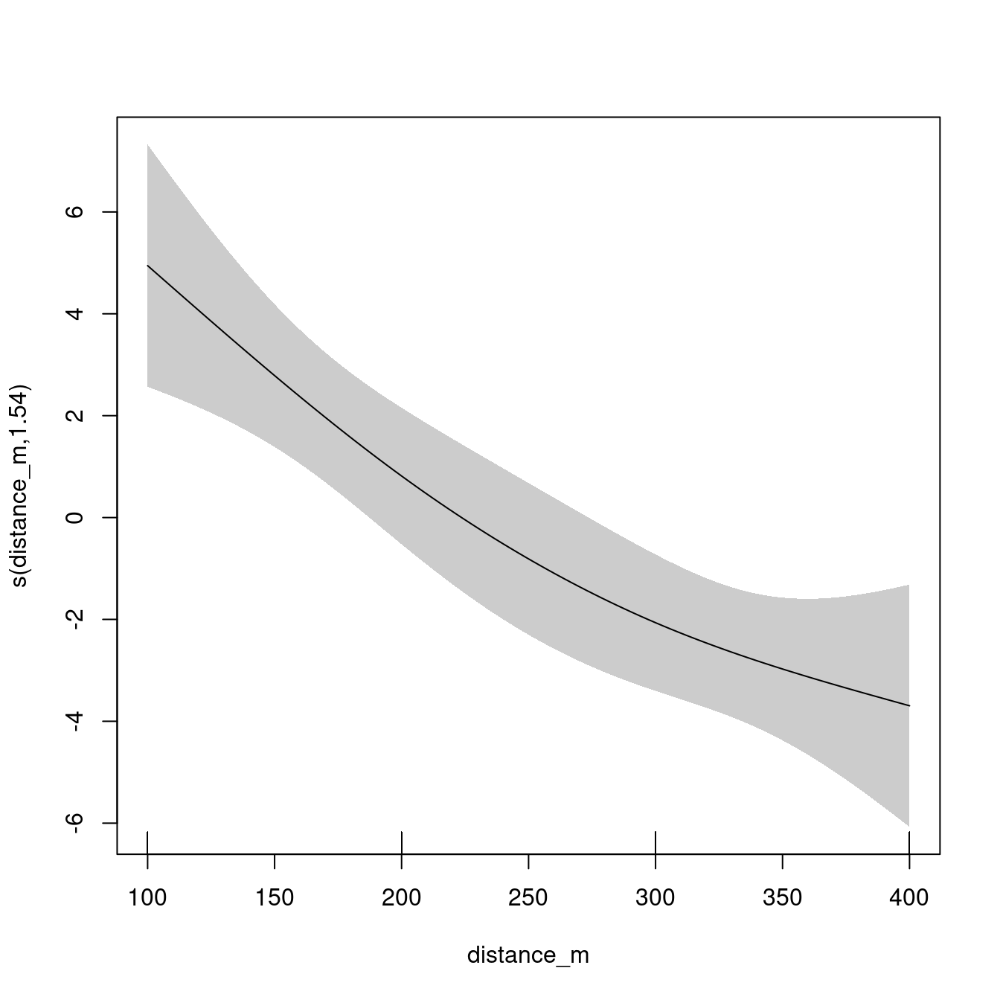
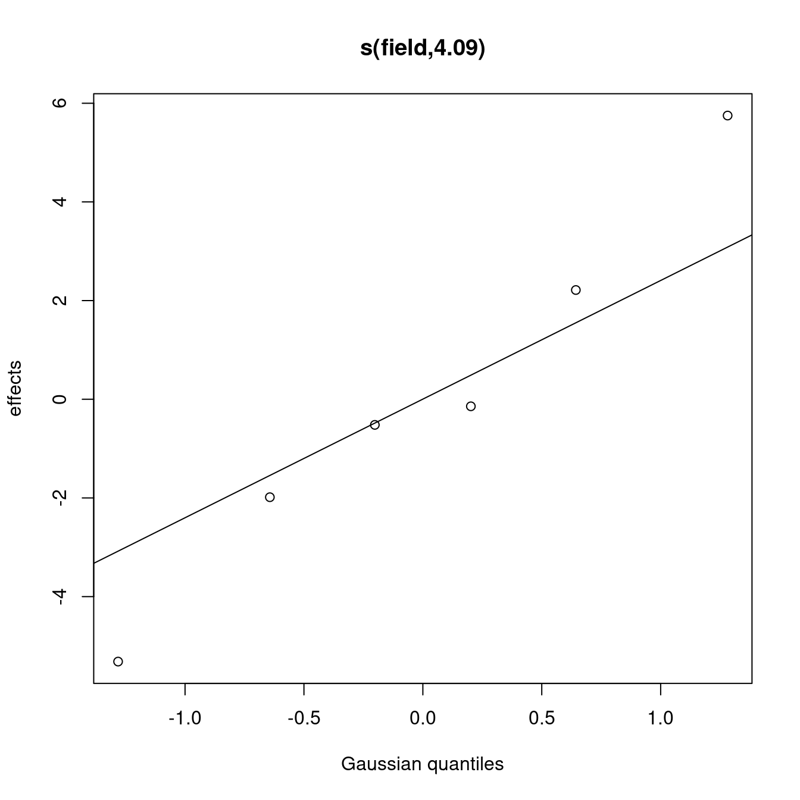
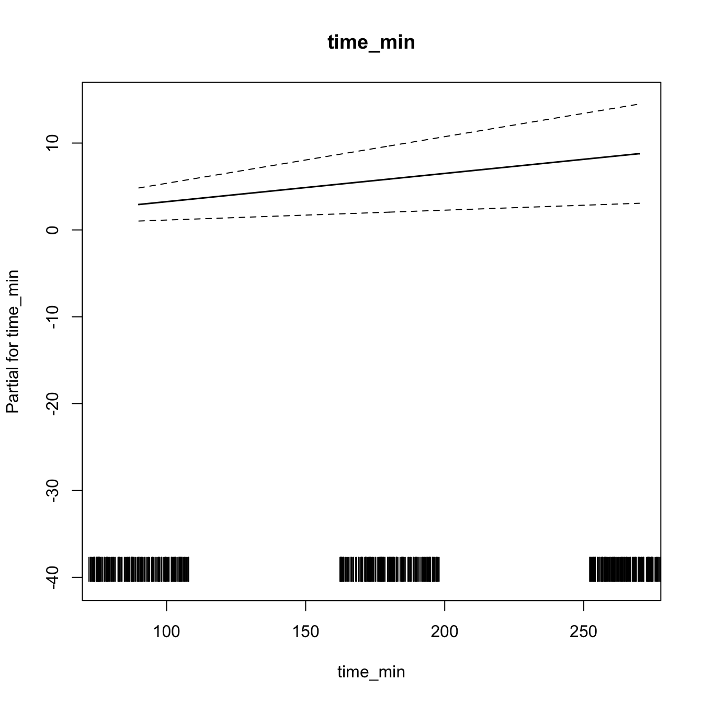
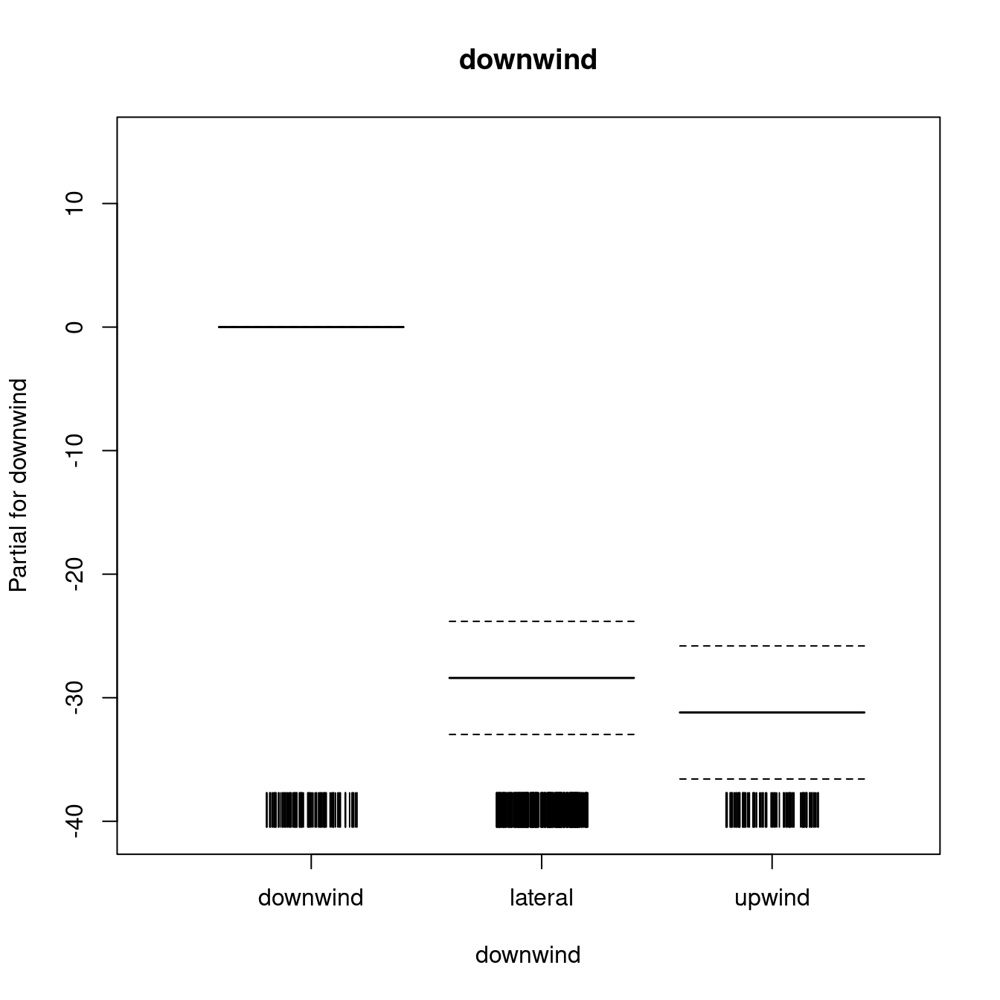
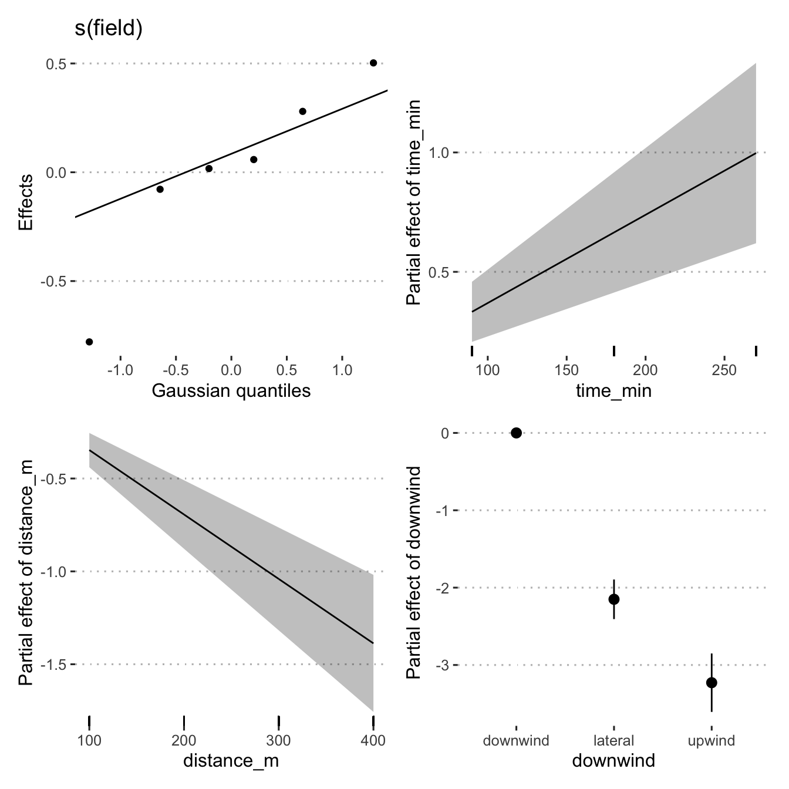
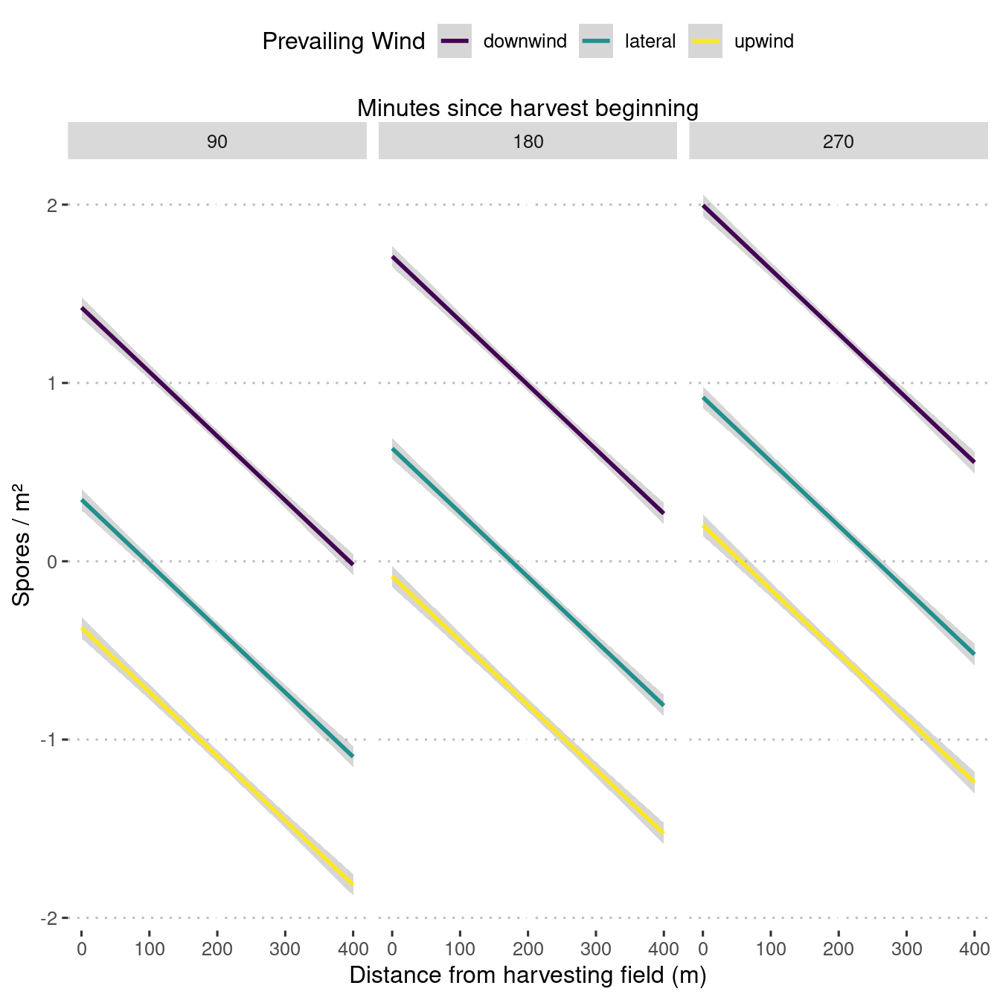

library("tidyverse")
library("broom")
library("ggplot2")
library("ggpubr")
library("here")
library("mgcv")
library("mgcViz")
theme_set(theme_pubclean())load(here("data/dat.Rdata"))
load(here("data/mod_dat.Rdata"))mod_dat %>%
distinct(field, trap_coord, .keep_all = TRUE) %>%
select(trap_coord,
trap_degrees,
wind_dir,
wind_degrees,
degree_dif,
downwind) %>%
print(n = Inf)## # A tibble: 24 × 6
## trap_coord trap_degrees wind_dir wind_degrees degree_dif downwind
## <chr> <dbl> <chr> <dbl> <dbl> <fct>
## 1 E 90 NE 45 45 lateral
## 2 N 0 NE 45 45 lateral
## 3 S 180 NE 45 135 lateral
## 4 W 270 NE 45 225 lateral
## 5 E 90 S 180 90 lateral
## 6 N 0 S 180 180 downwind
## 7 S 180 S 180 0 upwind
## 8 W 270 S 180 90 lateral
## 9 NE 45 SE 135 90 lateral
## 10 NW 315 SE 135 180 downwind
## 11 SE 135 SE 135 0 upwind
## 12 SW 225 SE 135 90 lateral
## 13 E 90 NE 45 45 lateral
## 14 N 0 NE 45 45 lateral
## 15 S 180 NE 45 135 lateral
## 16 W 270 NE 45 225 lateral
## 17 NE 45 NE 45 0 upwind
## 18 NW 315 NE 45 270 lateral
## 19 SE 135 NE 45 90 lateral
## 20 SW 225 NE 45 180 downwind
## 21 E 90 N 0 90 lateral
## 22 N 0 N 0 0 upwind
## 23 S 180 N 0 180 downwind
## 24 W 270 N 0 270 lateralm1 <- gam(
spore_cm2 ~ distance_m:time_min +
s(field, bs = "re"),
data = mod_dat,
method = "REML"
)
m1##
## Family: gaussian
## Link function: identity
##
## Formula:
## spore_cm2 ~ distance_m:time_min + s(field, bs = "re")
##
## Estimated degrees of freedom:
## 4.27 total = 6.27
##
## REML score: 2602.536m2 <- gam(
spore_cm2 ~ distance_m:time_min +
s(field, bs = "re") +
s(downwind, bs = "re"),
method = "REML",
data = mod_dat
)
m2##
## Family: gaussian
## Link function: identity
##
## Formula:
## spore_cm2 ~ distance_m:time_min + s(field, bs = "re") + s(downwind,
## bs = "re")
##
## Estimated degrees of freedom:
## 4.05 1.98 total = 8.03
##
## REML score: 2531.749m3 <- gam(
spore_cm2 ~ distance_m:time_min +
s(wind_speed, bs = "re") +
s(field, bs = "re") +
s(downwind, bs = "re"),
method = "REML",
data = mod_dat
)
m3##
## Family: gaussian
## Link function: identity
##
## Formula:
## spore_cm2 ~ distance_m:time_min + s(wind_speed, bs = "re") +
## s(field, bs = "re") + s(downwind, bs = "re")
##
## Estimated degrees of freedom:
## 0.0004 4.0483 1.9793 total = 8.03
##
## REML score: 2531.749m4 <- gam(
spore_cm2 ~ time_min + downwind + wind_speed +
s(distance_m, k = 3) +
# s(wind_speed, bs = "re") +
s(field, bs = "re"),
method = "REML",
data = mod_dat
)
m4##
## Family: gaussian
## Link function: identity
##
## Formula:
## spore_cm2 ~ time_min + downwind + wind_speed + s(distance_m,
## k = 3) + s(field, bs = "re")
##
## Estimated degrees of freedom:
## 1.54 3.33 total = 9.87
##
## REML score: 2504.107m4.1 <- gam(
spore_cm2 ~ time_min + downwind + wind_speed +
s(distance_m, k = 3) +
s(time_min, bs = "re") +
s(field, bs = "re"),
method = "REML",
data = mod_dat
)
m4.1##
## Family: gaussian
## Link function: identity
##
## Formula:
## spore_cm2 ~ time_min + downwind + wind_speed + s(distance_m,
## k = 3) + s(time_min, bs = "re") + s(field, bs = "re")
##
## Estimated degrees of freedom:
## 1.54 0.00 3.33 total = 9.87
##
## REML score: 2504.107m5 <- gam(
spore_cm2 ~ time_min + downwind +
s(distance_m, k = 3) +
# s(wind_speed, bs = "re") +
s(field, bs = "re"),
method = "REML",
data = mod_dat
)
m5##
## Family: gaussian
## Link function: identity
##
## Formula:
## spore_cm2 ~ time_min + downwind + s(distance_m, k = 3) + s(field,
## bs = "re")
##
## Estimated degrees of freedom:
## 1.54 4.09 total = 9.63
##
## REML score: 2503.903m6 <- gam(
spore_cm2 ~ time_min + distance_m + downwind + rel_hum +
temp + wind_speed + smut_incidence +
s(distance_m, k = 3) +
# s(wind_speed, bs = "re") +
s(field, bs = "re"),
method = "REML",
data = mod_dat
)
m6##
## Family: gaussian
## Link function: identity
##
## Formula:
## spore_cm2 ~ time_min + distance_m + downwind + rel_hum + temp +
## wind_speed + smut_incidence + s(distance_m, k = 3) + s(field,
## bs = "re")
##
## Estimated degrees of freedom:
## 1.542 0.915 total = 10.46
##
## REML score: 2504.34 rank: 16/17Check models for best fit using AIC.
models <- list(
m1 = m1,
m2 = m2,
m3 = m3,
m4 = m4,
m4.1 = m4.1,
m5 = m5,
m6 = m6
)
map_df(models, glance, .id = "model") %>%
arrange(AIC)## # A tibble: 7 × 8
## model df logLik AIC BIC deviance df.residual nobs
## <chr> <dbl> <dbl> <dbl> <dbl> <dbl> <dbl> <int>
## 1 m6 10.5 -2498. 5019. 5070. 196855. 566. 576
## 2 m4 9.87 -2498. 5019. 5070. 197053. 566. 576
## 3 m4.1 9.87 -2498. 5019. 5070. 197053. 566. 576
## 4 m5 9.63 -2498. 5019. 5070. 197125. 566. 576
## 5 m2 8.03 -2511. 5041. 5082. 206249. 568. 576
## 6 m3 8.03 -2511. 5041. 5082. 206249. 568. 576
## 7 m1 6.27 -2587. 5189. 5222. 268529. 570. 576anova(m1, m2, m3, m4, m4.1, m5, m6, test = "F")## Analysis of Deviance Table
##
## Model 1: spore_cm2 ~ distance_m:time_min + s(field, bs = "re")
## Model 2: spore_cm2 ~ distance_m:time_min + s(field, bs = "re") + s(downwind,
## bs = "re")
## Model 3: spore_cm2 ~ distance_m:time_min + s(wind_speed, bs = "re") +
## s(field, bs = "re") + s(downwind, bs = "re")
## Model 4: spore_cm2 ~ time_min + downwind + wind_speed + s(distance_m,
## k = 3) + s(field, bs = "re")
## Model 5: spore_cm2 ~ time_min + downwind + wind_speed + s(distance_m,
## k = 3) + s(time_min, bs = "re") + s(field, bs = "re")
## Model 6: spore_cm2 ~ time_min + downwind + s(distance_m, k = 3) + s(field,
## bs = "re")
## Model 7: spore_cm2 ~ time_min + distance_m + downwind + rel_hum + temp +
## wind_speed + smut_incidence + s(distance_m, k = 3) + s(field,
## bs = "re")
## Resid. Df Resid. Dev Df Deviance F Pr(>F)
## 1 568.77 268529
## 2 566.74 206249 2.0313332 62280 88.0900 < 2.2e-16 ***
## 3 566.74 206249 0.0053769 0 0.0146 0.02541 *
## 4 564.52 197053 2.2199250 9196 11.9020 3.475e-06 ***
## 5 564.52 197053 0.0000000 0
## 6 564.38 197125 0.1312158 -72
## 7 564.89 196855 -0.5068690 269
## ---
## Signif. codes: 0 '***' 0.001 '**' 0.01 '*' 0.05 '.' 0.1 ' ' 1plot(m5, all.terms = TRUE, scheme = 1)
summary(m5)##
## Family: gaussian
## Link function: identity
##
## Formula:
## spore_cm2 ~ time_min + downwind + s(distance_m, k = 3) + s(field,
## bs = "re")
##
## Parametric coefficients:
## Estimate Std. Error t value Pr(>|t|)
## (Intercept) 26.64001 3.23106 8.245 1.16e-15 ***
## time_min 0.03253 0.01058 3.075 0.00221 **
## downwindlateral -28.39860 2.28906 -12.406 < 2e-16 ***
## downwindupwind -31.19358 2.69277 -11.584 < 2e-16 ***
## ---
## Signif. codes: 0 '***' 0.001 '**' 0.01 '*' 0.05 '.' 0.1 ' ' 1
##
## Approximate significance of smooth terms:
## edf Ref.df F p-value
## s(distance_m) 1.543 1.791 8.656 0.000288 ***
## s(field) 4.086 5.000 4.700 3.52e-05 ***
## ---
## Signif. codes: 0 '***' 0.001 '**' 0.01 '*' 0.05 '.' 0.1 ' ' 1
##
## R-sq.(adj) = 0.298 Deviance explained = 30.9%
## -REML = 2503.9 Scale est. = 348.05 n = 576b <- getViz(m5)
print(plot(b, allTerms = T), pages = 1) # Calls print.plotGam()
mod_dat %>% distinct(downwind) %>% pull()## [1] lateral downwind upwind
## Levels: downwind lateral upwindnewd <- expand_grid(
time_min = c(90, 180, 270),
downwind = c("downwind", "lateral", "upwind"),
distance_m = seq(0, 400, 100),
field = 5
)
newd$pred_spore_cm2 <- predict.gam(m5, newd)newd %>%
ggplot(aes(distance_m, pred_spore_cm2, col = downwind)) +
geom_point() +
geom_line() +
scale_colour_viridis_d() +
facet_grid(. ~ time_min) +
scale_x_continuous(sec.axis = sec_axis(
~ . ,
name = "Minutes since harvest beginning",
breaks = NULL,
labels = NULL
)) +
labs(x = "Distance from harvesting field (m)",
y = "Spores / m²",
col = "Prevailing wind") +
theme(
legend.position = "top",
legend.justification = "center",
legend.direction = "horizontal",
legend.background = element_blank(),
legend.key = element_blank()
) +
guides(colour = guide_legend(title.position = "top",
title.hjust = 0.5))
ggsave(
last_plot(),
file = "plots/spore_prediction.png",
w = 5,
h = 2,
scale = 1.2
)